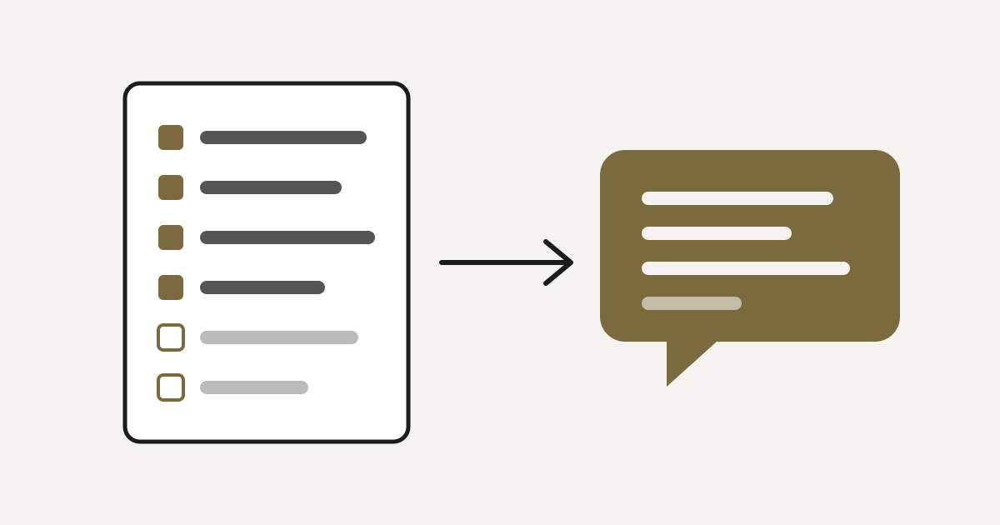

TAICA_生成式AI：文字與圖像生成的原理與實務
這裡收錄我在生成式 AI 課程中的作業。每個作品都記錄用了什麼技術、為什麼這樣設計，以及它是怎麼運作的。
依完成順序排列，點卡片看完整介紹
選一位歌手的風格，用滑桿與開關即時生成一段原創循環音樂。
三位成員輪流回覆煩惱投稿：先事實暴擊、再互相吐槽，最後給真心建議。
把 Anthropic 的 MCP 課程做成知識庫，打造只根據課程內容回答的中文助教。

讓諮詢機器人先產生可編輯的「諮詢計畫」，再依計畫寫出三人對話回覆。